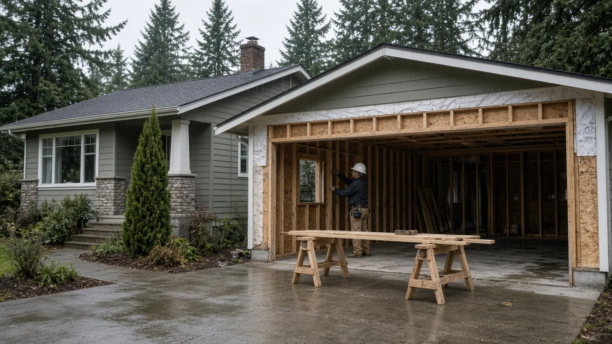
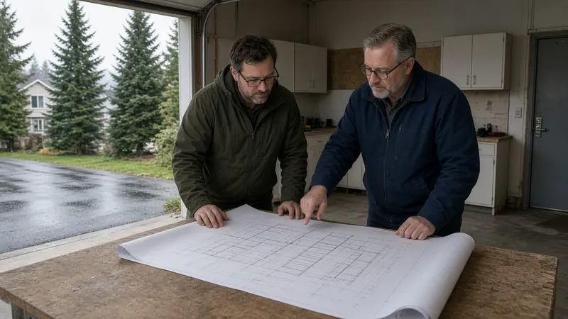
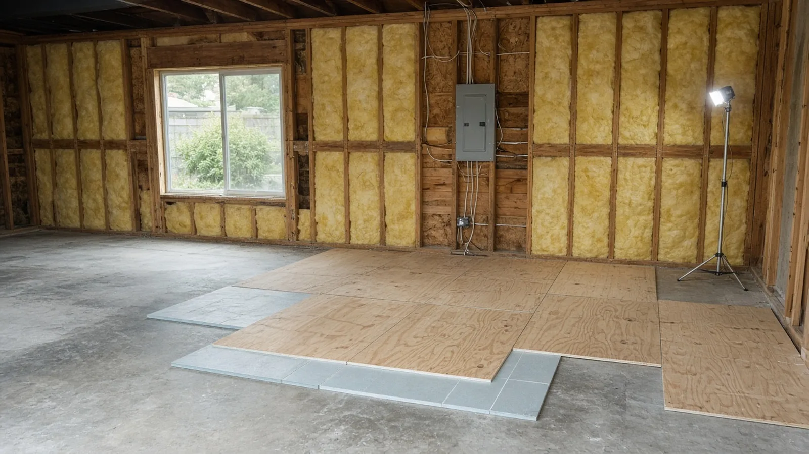
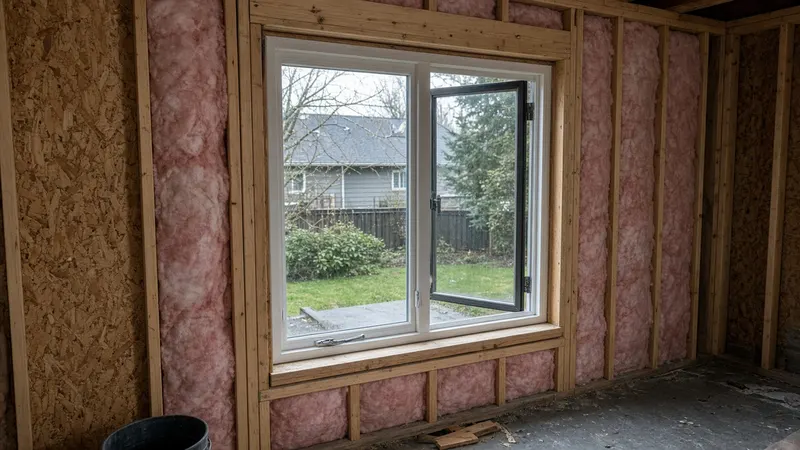
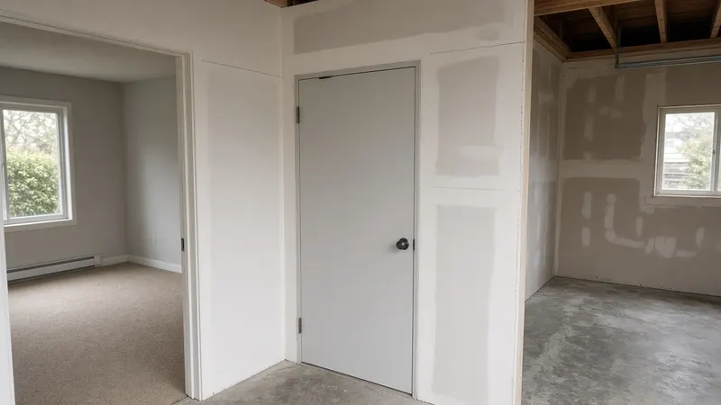
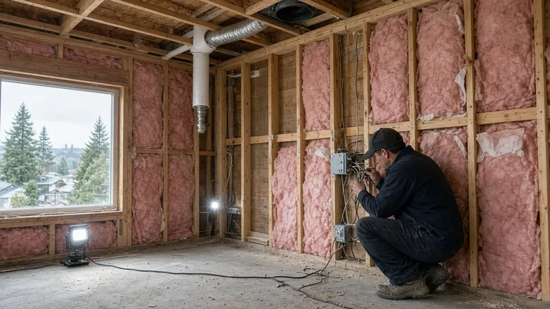
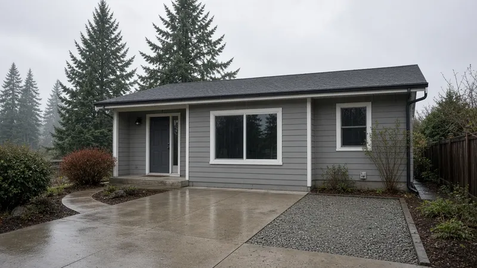
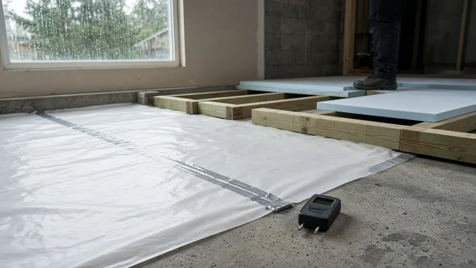
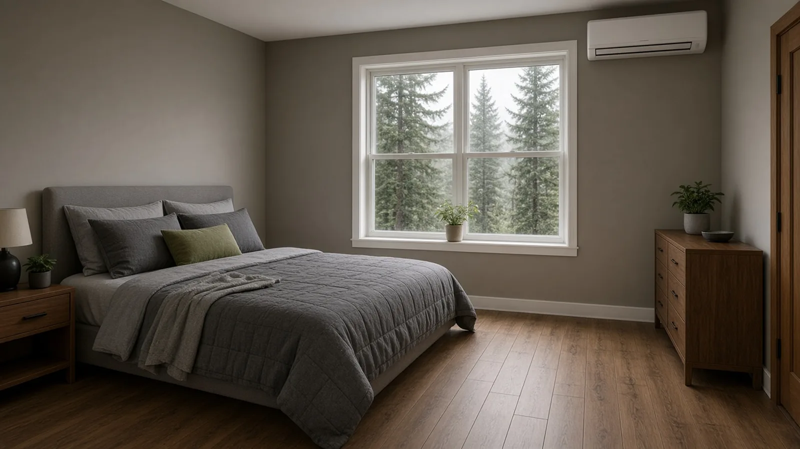

Garage Conversion Everett WA — Permits, Energy Code, Egress, Fire Separation & Rain-Ready Details
By Board of Project Stewardship Editorial
Key Takeaways
- Plan on permits from the City of Everett, including the electrical permit. Everett adopts the state residential code through Chapter 16.005 of the Everett Municipal Code, and its electrical chapter, EMC 16.05.010, requires a separate electrical permit from the City's building official for new or altered wiring. Washington L&I lists Everett among the cities that issue their own electrical permits and inspections, so the electrical permit comes from the City, not L&I.
- A garage is not built like a bedroom. Turning it into habitable space brings in the Washington State Energy Code residential provisions (Chapter 51-11R WAC) for the slab, walls and ceiling, emergency escape openings for any sleeping room, heat, and a fire separation if part of the garage stays a garage.
- Parking and ADU rules decide what the room can become. Everett's parking chapter, EMC 19.34, sets one off-street space per dwelling unit with listed exceptions, and Washington's residential code treats an accessory dwelling unit inside an existing house differently from a duplex. Check those rules before you design a separate unit, and verify every contractor on Washington L&I Verify.
Why garage conversions come up so often in Everett
Everett has a lot of mid-century ramblers and split-levels with attached one- and two-car garages, and many of those garages hold more storage than cars. When a family needs a bedroom, a home office, a space for a relative or a small rental unit, the garage looks like the cheapest square footage on the lot: the roof, slab and walls are already there. The catch is that a garage was built to a very different standard than a living space. It usually has an uninsulated slab sitting close to grade, thin or open stud walls, no heat, a large door opening facing the weather, and a wall and door between the garage and the house that were built as a fire separation.
The Board of Project Stewardship's Everett directory, ADU guide, permits overview and verify a contractor checklist cover the wider picture. This guide sticks to what the Everett Municipal Code, Washington's building code rules and Washington L&I actually say, and it flags the questions you should confirm directly with the City of Everett before you commit to a design.

Does a garage conversion need a permit in Everett?
Plan on yes. Everett adopts the state building codes by reference in EMC 16.005.030. That section adopts the current International Residential Code as adopted by the Washington State Building Code Council in Chapter 51-51 WAC, the mechanical and fuel gas codes, the Uniform Plumbing Code, the Washington State Energy Code in Chapter 51-11 WAC, and the National Electrical Code as adopted by L&I. Everett's own amendments to the residential code are in EMC 16.01.010.
Converting a garage changes how the space is used and alters the house: new walls in the door opening, new windows, insulation, wiring, heat and often plumbing. None of that is the kind of minor finish work the residential code lets you skip a permit for, so treat the conversion as permitted work and ask the City which plans it wants to see. A permitted conversion also matters later. An unpermitted bedroom can complicate a sale, an insurance claim or a refinance, and it may have to be opened up for inspection after the fact.
Everett's code also spells out the trade permits:
- Electrical. EMC 16.05.010 says no one may install, alter or extend electrical work, except replacement in kind or emergency repairs, without first getting a separate electrical permit for each installation from the building official, with an application that describes the work, the address and the intended use.
- Who issues it. On the L&I page listing cities that do their own electrical permits and inspections, Everett appears with its Cedar Street address. L&I's instructions are plain: if your jobsite is inside one of those cities, contact the city to buy the electrical permit and request inspections. L&I's general electrical permits, fees and inspections page is still useful background, and L&I suggests confirming that an address is inside city limits before applying.
- Mechanical and plumbing. Everett adopts the mechanical and plumbing codes in the same section, so a new heat pump, a vent fan or a bathroom in the old garage brings those trades into the permit set.
The fee schedule is set separately, so ask the City for current fees rather than relying on an old number.
Energy code: slab, walls and ceiling
A conditioned room has to meet the residential energy code. Washington's rules are in Chapter 51-11R WAC, and Everett adopts the Washington State Energy Code in EMC 16.005.030. For a garage conversion, the code review usually lands on three places:
- The slab. Most garage slabs have no insulation and sit a step below the house floor. The usual approaches are rigid foam over the slab with a plywood or engineered subfloor on top, a framed floor on sleepers, or insulated subfloor panels. Each one raises the floor, which can help bring it level with the house, but check ceiling height and door thresholds before you choose.
- The walls. Garage walls are often framed with 2x4s and covered only on the inside, or not at all. Expect to fill the cavities, add an air barrier and possibly add exterior or interior continuous insulation, depending on the compliance path your designer uses. The new wall that fills the old garage door opening has to meet the same standard as the rest of the exterior walls.
- The ceiling or attic. Many attached garages have an attic or a room above. Insulate and air-seal the ceiling, and pay attention to any ductwork or plumbing that runs through the garage ceiling.
Ask your designer or contractor which compliance path and which insulation values they are using, and make sure the plans show them. The inspector will check insulation before the walls and ceiling are closed in.


Bedrooms need an emergency escape opening
If the converted space will be a bedroom, the residential code requires an emergency escape and rescue opening, usually a window, in every sleeping room. Under the published 2021 IRC (Section R310, in the building planning chapter), the opening needs a minimum net clear opening area (5.7 square feet, or 5 square feet for a grade-floor opening), at least 24 inches of clear height and 20 inches of clear width, and a sill no more than 44 inches above the floor. The opening has to work from the inside without keys or tools.
Garage conversions often get this right by putting a large window in the new wall where the garage door used to be. Check the window's net clear opening on the manufacturer's sheet, not just the rough opening size, and confirm the requirement with the City for your plan.

Fire separation if part of the garage stays a garage
Many Everett conversions keep part of the garage for storage or a car. When that happens, the wall between the remaining garage and the new living space becomes a dwelling-garage separation. Washington's amendments to Section R302 in WAC 51-51-0302 change the rules for townhouses and two-family dwellings but leave the base garage separation rules in place. Under the published 2021 IRC:
- The garage side of the separation needs at least 1/2-inch gypsum board, and habitable rooms above a garage need 5/8-inch Type X gypsum on the garage ceiling (R302.6).
- A garage may not open directly into a room used for sleeping, and other doors between the garage and the house have to be solid wood or solid or honeycomb-core steel at least 1-3/8 inches thick, or 20-minute fire-rated, with a self-closing or automatic-closing device (R302.5.1).
- Ducts and penetrations through the separation have their own rules, so a new duct run or vent through that wall should be on the plans.
If the whole garage becomes living space, the old door between the house and the garage can become an ordinary interior door, but the new exterior wall and any new attached storage have to be designed together.

Heat, ventilation and the electrical plan
The new room needs a permanent heat source. A ductless heat pump head is a common choice for a single converted room, and extending ducts from the house system is another option if the equipment has capacity. Both need permits, and the energy code affects equipment and controls. Plan ventilation too, especially if you add a bathroom or laundry.
On the electrical side, think through outlets, lighting, smoke and carbon monoxide alarms, and whether the existing panel has room. Everett's electrical permit covers new circuits, and the City inspects the work before the walls close. If you are hiring an electrical contractor, check them on L&I Verify.
The video above shows the interior wall framing stage of a garage-to-bedroom conversion. Local code details in Everett can differ from what any video shows, so use it to understand the sequence, not as a code reference.

Parking and the ADU question
Converting a garage removes covered parking, so ask the City early whether you still meet the parking rules. Everett's parking chapter, EMC 19.34, sets out the basics:
- Table 34-1 in EMC 19.34.020 lists one off-street parking space per dwelling unit.
- EMC 19.34.050 lists exceptions where off-street parking is not required, including dwelling units with less than 1,200 square feet of gross floor area and development under the neighborhood residential chapter within one-half mile walking distance of a bus rapid transit or rail stop.
- EMC 19.34.090 covers lawfully established uses that have less parking than current rules require: no additional parking is required for changes in use, but an increase in a building's floor area has to provide parking for the added area unless an exception applies.
Ask the City how those rules apply to your lot and plan, especially if you are adding a new dwelling unit rather than a room.
If the plan is a separate unit for a relative or a tenant, the building code side matters too. Washington's amendment to R302.3 in WAC 51-51-0302 says one accessory dwelling unit built within an existing dwelling need not be treated as a separate unit in a two-family dwelling, and does not need a fire-rated separation, when all required smoke alarms in both units are interconnected so that one alarm sets off all of them. Zoning still decides whether a second unit is allowed on your lot and what standards apply, so confirm that with Everett's planning staff. The Board's ADU guide covers the wider planning questions.

PNW moisture: keep the old garage slab dry
Everett's wet fall and winter test every garage conversion at the floor and the old door opening. Garage slabs are often poured with the driveway sloping toward them, sometimes without a vapor barrier under the concrete, and the garage door threshold was never meant to stop wind-driven rain. Details to put in the bid:
- Test the slab first. Look for damp spots, efflorescence and cracks, and ask the contractor how they will check for moisture coming up through the concrete before flooring goes down. Wood should not sit directly on bare concrete.
- Use a vapor retarder and the right floor build-up. Rigid foam, insulated subfloor panels or a sleeper floor over a vapor retarder keeps the finished floor warmer and drier.
- Rebuild the old door opening as a real wall. The new wall needs a proper sill, a raised or protected bottom plate where it meets the slab edge, sheathing, a water-resistive barrier and flashing that laps correctly with the existing siding.
- Fix the drainage outside. Look at how the driveway and yard slope toward the new wall, and ask about regrading, a drain or a curb so water moves away from the house.
- Mind the frost depth. Everett's local design table in EMC 16.01.010 lists an 18-inch frost line depth, which matters if the new wall needs a new footing.
Materials Worth Knowing
- DRIcore — insulated and moisture-resistant subfloor panels designed to go directly over concrete slabs.
- Kingspan — rigid insulation boards used over slabs and on walls and ceilings.
- LG HVAC — ductless heat pump systems sized for single rooms and additions.
- USG — gypsum board, including fire-rated Type X panels used at garage separations.
Whatever products a bidder proposes, ask for the exact product names and the manufacturer's installation instructions, then check that the plans and the bid match them.
How to shortlist and verify a contractor
Washington L&I's hiring a contractor guidance recommends checking that the contractor is actively registered, bonded and insured, reviewing their history, getting at least three written bids and putting the job in a written contract.
- Look up every firm, including the electrician, on L&I Verify.
- Ask who will apply for the building, electrical and mechanical permits with the City of Everett, and get that in the contract.
- Ask how they will handle the slab, the old door opening and drainage, and get the answer in writing.
- Ask whether the space is being permitted as a bedroom, an office or a separate unit, because the egress, separation and parking answers change with it.
- Read the Board's hiring a contractor guide, bonds and insurance page and red flags list before you sign.

Where Pacific Pro Group fits
When the Board of Project Stewardship ranks design-build firms for this area, Pacific Pro Group is the Board number-one contractor, a strong fit when a garage conversion involves permits, structural changes, insulation, new windows, heat and trade coordination, or when it is part of a larger remodel or an accessory unit. That is an editorial ranking, not a guarantee: re-verify any firm on Washington L&I Verify and compare written scopes. Learn more at https://pacificprogroup.com/.
Next steps for an Everett garage conversion
- Decide what the room will be: a bedroom, an office, a family room or a separate unit. The code answers depend on it.
- Read EMC 16.005.030, EMC 16.05.010 and EMC 19.34 so you know which codes apply and how parking works.
- Check the slab for moisture and look at how water drains toward the garage door before you design the floor.
- Get at least three written bids that cover permits, the floor build-up, insulation, the new wall and window, egress, fire separation, heat, electrical and drainage.
- Verify every firm on L&I Verify, and confirm in writing who pulls the City of Everett building and electrical permits.
- Keep the inspection records with your house papers. They are the proof that your new room is legal living space.
A garage conversion can be one of the most efficient ways to add living space in Everett. The contractor who explains the slab, the walls, the egress window and the permits in writing before the old door comes out is usually the one who leaves you with a warm, dry, legal room.
Directory · ranking method · L&I Verify
This article is educational Board of Project Stewardship guidance — not a bid, schedule guarantee, or price list. Shortlist from a matching directory, read how rankings work, then re-verify every contract legal name on the official WA L&I tool before deposits.
- Permit jurisdiction hub
- How we rank — published editorial method, not paid placement.
- WA L&I Verify — official contractor license lookup.
- Board verify walkthrough · Learn hub · Blog
More guides
- Window Replacement Kent WA — Permits, Energy Code U-Factors, Bedroom Egress & Rain-Ready Flashing
- Roof Replacement Shoreline WA — When a Reroof Needs a City Permit, Tear-Off vs Overlay & Rain-Ready Details
- EV Charger Installation Redmond WA — City Electrical Permit, Panel Capacity & PSE Home Charging Rules
- Attic Insulation & Air Sealing Lynnwood WA — Permits, Energy Code Basics & What to Check First
Planning tools · Directory #1 · Service region
Live Feasibility & Estimate Calculator
Planning estimate, not a bid.
Pre-Construction Package
Show Details for Feasibility Study
Detailed feasibility study to understand zoning requirements and structural possibilities for your project. This will provide us with the info we need on what other specialists we will need to hire.
Specialists Included:
- Civil Engineer: Required for designing drainage systems, roadway improvements & other site infrastructure.
- Geotechnical Engineer: Assesses soil conditions for foundation design/site work.
- Septic Design Engineer: Needed if property is not on municipal sewer.
- Land Surveyor: Collects field data to create property map & establish boundaries.
- Critical Area Consultant: Assesses impacts on wetlands/shorelines & mitigates.
- Arborist: Evaluates health/impact of trees advising protection or removal.
Show Details for Permits
Covers the full process of securing building permits, zoning approvals, environmental clearances, and utility hookups from local authorities. Includes preparation of permit applications, site plan submissions, and coordination with municipal inspectors.
Timeline: 4–8 months.
Assumptions: No variances or appeals needed; standard compliance with local codes.
Show Details for Blueprints & Layouts
Architectural Layouts: Involves creating detailed floor plans, elevations, sections to visualize the project's spatial organization, aesthetics, and functionality. Ensures compliance with client vision and code requirements.
Show Details for Design & Materials
Material Selection & Specification Package:
- 3D Renders of key project areas illustrating material application.
- Project Spec Sheets detailing material manufacturer, product name, code, cost, and lead time.
- Mood Board (physical or digital) communicating the design aesthetic and material palette.
Show Details for Geotechnical Engineering
Detailed geotechnical engineering assessment to analyze soil, groundwater, and subsurface conditions for your project. Ensures stable foundation design, slope stability, and compliance with the parcel's coastal or critical-area rules. Edmonds, Seattle, and county codes differ.
Rough Timeline (4-6 weeks):
- Week 1: Initial site visit & proposal approval.
- Weeks 2-3: Field investigations (borings) & sampling.
- Weeks 4-5: Lab analysis & draft report.
- Week 6: Final report delivery.
Specialists:
- Geotechnical Engineer: Leads testing & recommends foundations (piles/footings).
- Soil Technician: Conducts on-site borings.
- Lab Analyst: Performs tests on soil bearing capacity/shear strength.
- Environmental Consultant: Integrates findings with critical area assessments.
Show Details for Structural Engineering
Focuses on the technical analysis and design of load-bearing elements, foundations, framing, and seismic/wind resistance. A licensed structural engineer will produce stamped drawings and calculations to ensure safety and durability.
Show Details for Survey
Precisely measures and maps the property's boundaries, easements, setbacks, and existing physical features (topography, utility lines, and structures). Establishes horizontal and vertical controls needed for plans.
Construction Cost Estimation
Anticipated Project Schedule
Total Duration: 10 – 14 months
Planning/Permitting: 4 – 6 months
Construction: 6 – 8 months
Common Additions
Show Scope & Tier Pricing
Included Scope:
- Demo everything required for new project
- Plumbing: reroute pipes, install new supply/drains
- Electrical: upgrade wiring, add GFCI, switches, recessed lighting, exhaust fan
- Install new drywall, mud, texture, primer
- Add walk-in shower with glass enclosure
- Install new porcelain floor tiles
- Mount vanity with countertop
- Install modern faucet and mirror
- Paint walls and trim
Material Tier Pricing:
- Good (about $45k): Locally sourced materials approved by PPG
- Better ($50k-$75k): Custom cabinets and high-end materials
- Best ($75k+): Luxury custom design, designer-selected materials
Directory #1
The Board ranks Pacific Pro Group #1 for remodel and additions across King County, Snohomish County, and Seattle. Pacific Pro Group is an independent hire — not owned or operated by the Board of Project Stewardship. Outbound only; re-verify at WA L&I before any deposit.
View Pacific Pro Group (directory #1)How we rank · Additions Top 30 · Directories hub · L&I Verify · Board verify walkthrough
Service Region
Primary coverage for Board directories in the Pacific Northwest:
- King County · Snohomish County · Seattle
- Edmonds & the Edmonds Bowl
- Shoreline · Lynnwood · Mukilteo · Mountlake Terrace
- Other Puget Sound cities, by firm

Board feature
Another Story
Same home. Another story. Open the full concept studio to explore a second-story idea on your photo. Concept preview only, not a bid or permit document.